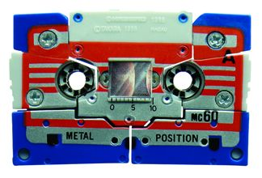
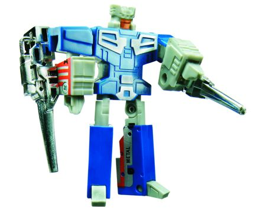
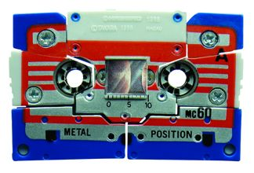
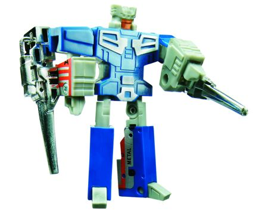
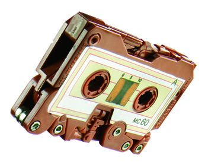
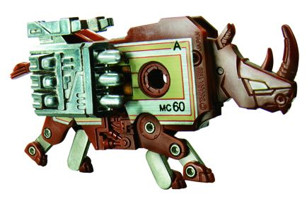
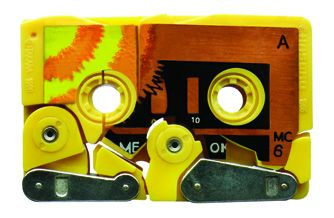
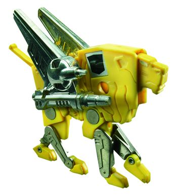
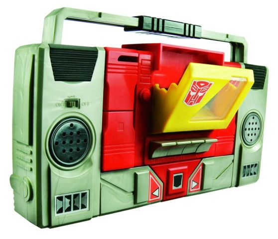
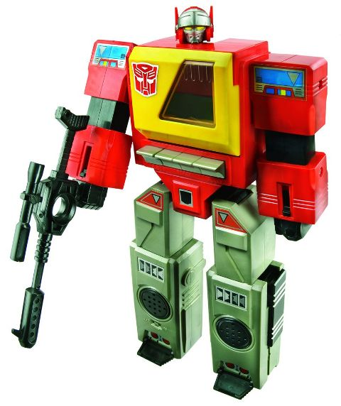

 
Difficulty of Transformation : Very Easy
Color Scheme : Blue, light gray, and some chrome silver and red
Individual Rating : 7.1
Allegiances:
Autobot
Price
: $50 (U.S.)
Difficulty of Sticker Applications
:
N/A
 Eject
Eject


Difficulty of Transformation
: Very
Easy
Color Scheme
: Blue, light gray,
and some chrome silver and red
Individual Rating
: 7.1
Eject's alt mode is a
cassette tape. In cassette tape, it's.. a tape. There's really not much
to say about this mode, other than the detail stickers tend to look remarkably
un-broken given how many pieces they're stuck on. Like Blaster's other
tapes, it can fit inside Blaster's chest (or Soundwave's, if you prefer).
The blue, light gray, and some red go together quite well, and give Eject
the most attractive color scheme of the 'bots in this pack, in my opinion.
Also, like the other 'bots in this set, his stickers are pre-applied (albeit
from some reports, sometimes sloppily). Hooray!
For such a little guy--
and for such an old toy-- Eject has a pretty nifty robot mode. Sure it's
stiff-looking, but hey, it's also a G1 toy. His "hands" are pretty poor,
being molded onto the side of some rather beefy lower arms, but that's
his only major weakness- otherwise proportionally he's pretty darn good.
The detailing on his chest is also very tech-y and a fairly unique design,
I like it. As far as his articulation, he can move at the shoulders (at
two points), elbows, and a little at the hips. Above-average articulation
for a G1 toy, there, especially at this size. Eject also comes with two
chrome guns that you can attach to his lower arms (and to the holes in
his cassette mode, though they look odd there).
Eject is my personal
fav of Blaster's cassettes, with a pretty decent robot mode. Yes, he has
a very boring alt mode, and is blocky and stiff-looking in robot mode,
but that comes with the G1 cassette-bot territory. His bad hands/lower
arms are his only glaring flaw if you already take the whole "reissue"
angle when appraising him.
 Ramhorn
Ramhorn


Difficulty of Transformation
: Very
Easy
Color Scheme
: Dull rusty brown and
some chrome silver and chrome gold
Individual Rating
: 5.8
Ramhorn's alt mode is
a cassette tape. Again, it's a tape, so there's really not much you can
do with it in this mode than stick it in Blaster's chest. The beast mode
are really obvious along the bottom of the tape mode, and it's a little
asymmetricla in terms of hiw it's shaped-- it's definitely an inferior
tape mode when compared to Eject, but it's still passable. The brown/gold/silver
color scheme is decent enough, but adding a little more of gold or silver
would've brought my opinion of the scheme up a bit more, since ALL his
blaster is the brown color.
Instead of a robot,
Ramhorn turned into a robotic rhino, complete with attachable missile packs
on his sides and a top-mounted chrome gun. They help to beef him up a little
bit, but his main drawback here is that he's still really two-dimensional,
which is a problem with almost all the G1 cassette animals. His legs are
pretty well-articulated, though moving at the hip, knee, and ankle of each
foot. His head can also move up and down a little, as can his little tail
that sticks out the back end.
Ramhorn is the middle-of-the-road
cassette of the bunch, with a decent, though flawed, cassette mode and
a rhino mode that LOOKS good-- from a side view. But like most G1 cassette
animals, he's way too two-dimensional, and that really hurts the "take
him seriously" factor.
 Steeljaw
Steeljaw


Difficulty of Transformation
: Very
Easy
Color Scheme
: Yellow and some chrome
silver and chrome gold
Individual Rating
: 5.2
Again, Steeljaw's alt
mode is a cassette tape. Not much playvalue here. His is definitely the
weakest of the three cassette modes, though, as it's very asymmetrical--
the legs really break up the look of the mode a lot and are very obvious
in this mode, not to mention they completely interrupt the detail sticker,
making it all look very complete, like there's some details or pieces missing.
Also, yellow is kind of an odd color for a cassette tape, though at least
it fits his beast mode. A bit more variety besides just yellow and silver
would have been appreciated. Some black, perhaps?
Steeljaw's beast mode
is a lion, but like Ramhorn, he's a very two-dimensional lion. Also like
Ramhorn, he has decent articulation, with hip, knee, and ankle articulation
on each leg, along with a little up-and-down movement on his head and tail
pieces. He also has two cool-looking "winged" cannons that can be plugged
into the sides of this mode (they can also be stored in cassette mode in
the holes, but they really look weird there). However, even ignoring the
two-dimensional properties of this mode, the proportions are still la bit
odd. His main body looks too large, though at least part of it has the
relevant ear and "hair" detailing to make it obvious it's a main. Still,
it looks rather off, making Steeljaw just look kinda goofy overall.
Steeljaw is my least
favorite of Blaster's cassettes, having a very broken-up, unfinished-looking
cassette mode and a misproportioned and two-dimensional lion mode. His
articulation and guns are the only really cool things about him, if you
ask me.
 Autobot
Blaster
Autobot
Blaster


Difficulty of Transformation: Easy
Color Scheme: Light gray, red, black, and
some yellow, clear plastic, and silver
Individual Rating: 6.1
Blaster's alternate mode
is, appropriately enough, a cassette tape player. As mentioned earlier,
he can store any one of his cassette minions inside of his tape deck in
either this or robot mode, but only one at a time. The red, yellow, gray,
and black color scheme is appropriately "Autobot-y" enough, and serves
as a nice Autobot counterpart to
Soundwave
,
what with Autobot red instead of a more Decepticon purplish blue. It's
not the most exciting of color schemes, to be sure, but it does the job
and certainly isn't gaudy in any way or has too much of any one color.
All the relevant details are there too, such as speakers, buttons that
you can push down on (although he's not a working player, of course), and
unlike Soundwave, a handle. He's also a fair bit bigger as a toy than his
Decepticon counterpart, and more in line with how big a real handheld cassette
player was. Blaster has a... well, a handheld blaster, but it can't be
stored in this mode. Le sigh.
Blaster's robot mode
is a disappointment, unfortunately. It's hard to believe this toy was made
AFTER Soundwave, because for one his proportions aren't nearly as good.
His arms are too wide, his fists too small, and his hips are connect to
the waist in an odd manner. Having the sliders that pop out his hands on
the FRONT of his lower arms is also a little ugly, too. His head sculpt
is great-- though a bit too small-- and his legs look decent enough, with
no real cassette player mode extras in this mode. Blaster's biggest flaw
in this mode is his extraordinarily bad articulation, even by G1 standards--
he can move at the neck and the shoulders. That's it. No elbow movement,
no useful leg movement at all. BIG oversight there, considering this figure
is easily big enough for these points to have been put in, even considering
'80s toy engineering.
Blaster has a great
cassette player mode, but his robot mode is a pretty big thumbs down, with
odd proportions and horrible articulation. His Decepticon counterpart Soundwave
is by far the superior toy.
G1 Reissue Blaster and his tapes is a nice SDCC exclusive reissue "look at things past", but as you'd expect, none of them really measure up well to most of today's figures. Of course, even ignoring that, Blaster is pretty bad in robot mode overall, and his animal cassettes suffer quite a bit from how two-dimensional they are. Eject is the only winner of the set, if you ask me. Only recommended for G1 diehards or fans of cassette and cassette-player TFs. (That said, $50 U.S. is a pretty fair price for the four of these guys, given how large Blaster is and its exclusive nature.)
Reviews by Beastbot
(Images from Hasbro .)